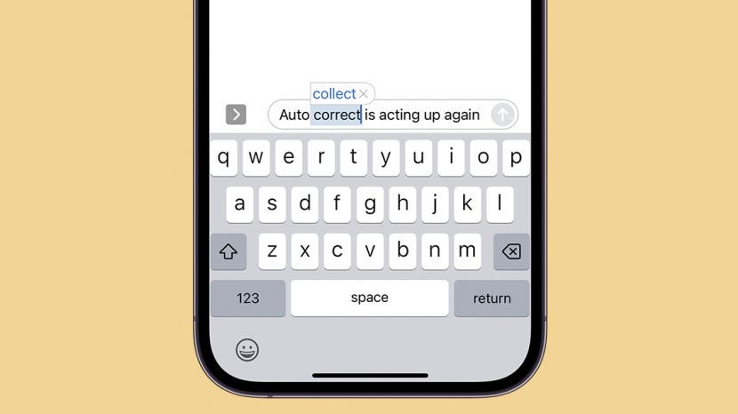

In the early 90's, Dean Hachamovitch joined Microsoft with a job in The Word Team. The idea for this word-processing tool started when Hachamovitch looked at the existing functionality that was already present in Word. Word in this case being the word processor program the company had already developed and released about a decade prior in 1983, originally called Multi-Tool Word for Xenix systems.
Pac-man is an arcade or video game. It is masisvely popular all-over the world. It features a yellow ball that has a mouth that eats small dots to gain points. While the player does this they must also make sure to not get eaten by the ghosts that are wondering around the screen. Each session give sthe player three lives.
see more about this object here boot page bad website